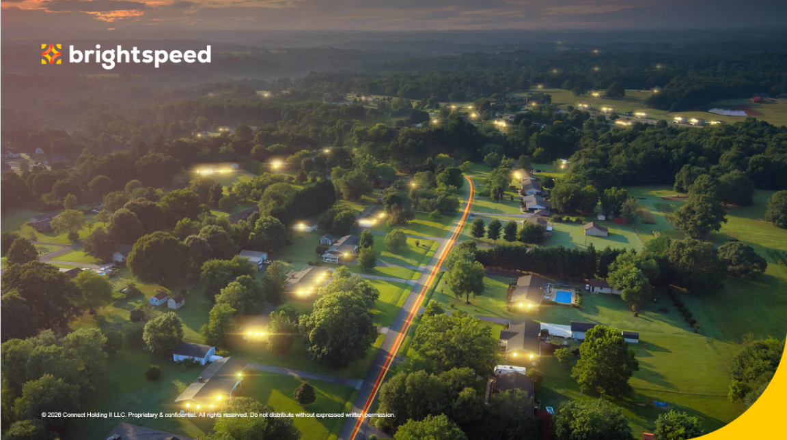

I led Brightspeed's Operations Training Support Instructional Design function as team lead and project manager. I built the team and the process behind 100+ training assets across 12 business areas, delivered to 6,000+ employees. The work varied from copper and fiber installation bootcamps to dispatch-software adoption, call-center performance, supervisor coaching, and new-hire onboarding.

Role
Senior Lead Instructional Designer & Project Manager
Ownership
Originated the ID function from scratch · 12 business areas
Team
Built & led a 5-person ID team
Reach
100+ assets · 6,000+ employees
Brightspeed's workforce was under pressure on several fronts at once. Technicians weren't using the dispatch and field software the right way. The call center was passing issues along instead of resolving them on the first call. Supervisors didn't have the tools to talk to technicians about performance. Installation bootcamps varied trainer to trainer, so a tech's training depended on who taught it. And new software was shipping at a rapid pace.
Field safety made the stakes literal. Improper techniques for work like dropping string across a roadway or working at height had caused serious injuries and fatalities in the industry. Training had to move fast and be exactly right.
I built the operating model the whole function would run on: intake, prioritization, production standards, and a launch process. That kept training in step with fast-changing software and consistent across 12 business areas. I built and led the team that produced the work, and I managed the priority, quality, speed and quality of every launch.
Created a single workflow for intake and production so all 12 business areas could be served without the team turning into a bottleneck.
Set shared production standards and made the bootcamps uniform across trainers. A technician got the same correct training no matter who taught it.
Ran the launch process that kept training shipping in step with fast-evolving software while the quality and safety accuracy held.
Across the 12 business areas, the team delivered 100+ assets in the format each audience needed. For the field, that meant software training on Optius, TechX, and ServiceNow, plus hands-on safety bootcamps for copper and fiber installation, working at heights, and dropping string across a roadway. For the call center, we built training on Genesys and Google CCAI aimed at resolving issues on the first call. For dispatch representatives, I built a virtual ILT program on dispatching technicians to jobs, then moved it to self-paced eLearning. That sped up software adoption by 50% and gave agents a resource to refer back to instead of sitting through a 20-plus-hour webinar. A Field Ops Leadership Transformation program gave supervisors the tools to have real performance conversations with technicians, and new hires got a consistent onboarding. Field systems and safety were the flagship. The rest gave the whole workforce coverage.
Built with Storyline · Rise · Camtasia · Vyond · Canva · HeyGen · WellSaid · Claude · SharePoint · SuccessFactors
The function ran on the operations I built. My processes and project management kept 100+ assets moving. I delivered required, regulatory training through the LMS in SuccessFactors, just-in-time training in Articulate Reach, and SharePoint to give teams one place to find current resources as the software kept changing.
I set priorities against where the business hurt most: safety, system adoption, and first-call resolution. I tracked delivery against the roadmap so leadership could see the function keeping pace.
95.4%
Field Ops leadership satisfaction, up from 81.3%
80%
Software adoption
+35%
First-call resolution
Scale
100+
Training assets delivered
12
Business areas served
6,000+
Employees reached
5
ID team built & led
The function ran on a repeatable process, so training scaled with Brightspeed's pace of change. New software and new field procedures kept coming, and the training stayed uniform across trainers and business areas.
"Tonya's drive and innovative mindset led to our team implementing new enterprise processes and procuring much needed software to support the growing business."
Zach Farrar, Sr. Instructional Designer at Brightspeed
A look at the actual work — interactive eLearning built for this program, viewable in Articulate Review.
© 2026 Tonya Weathers · L&D Leadership Portfolio